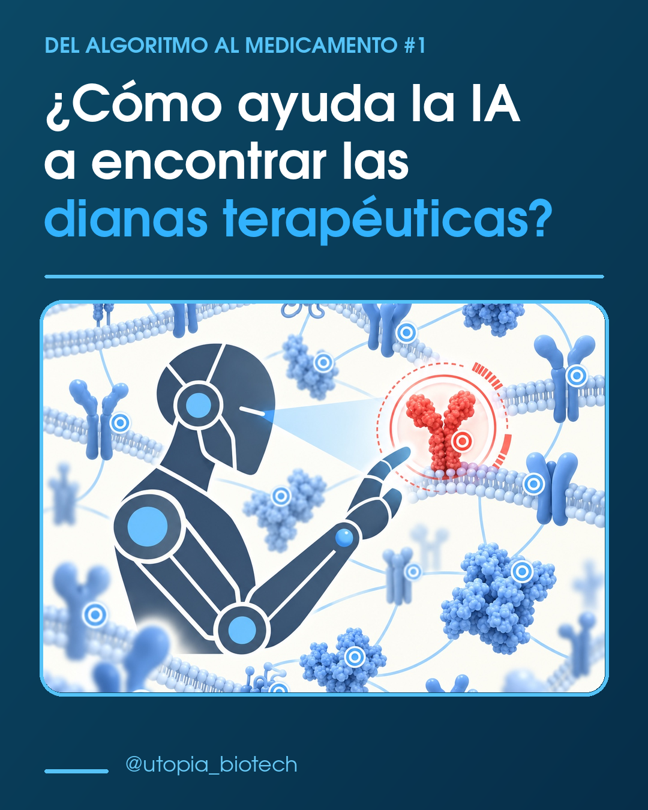
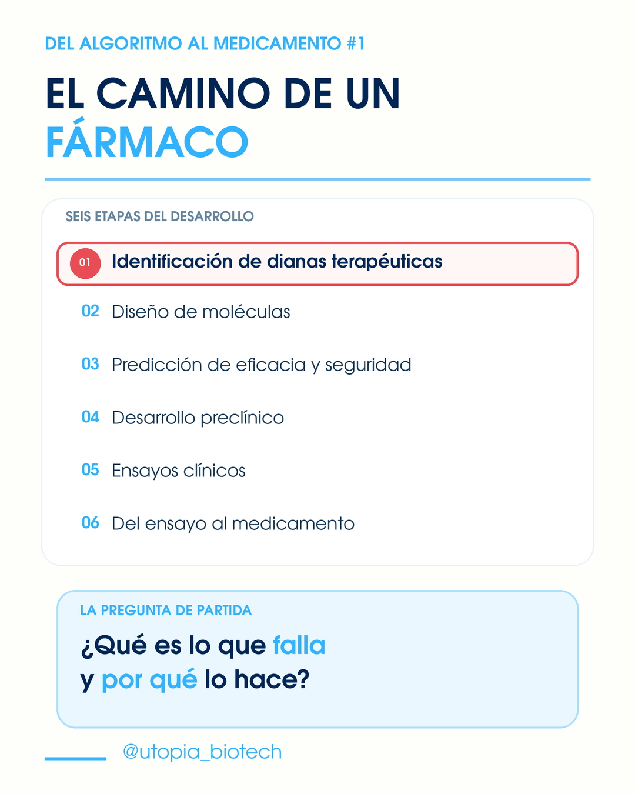
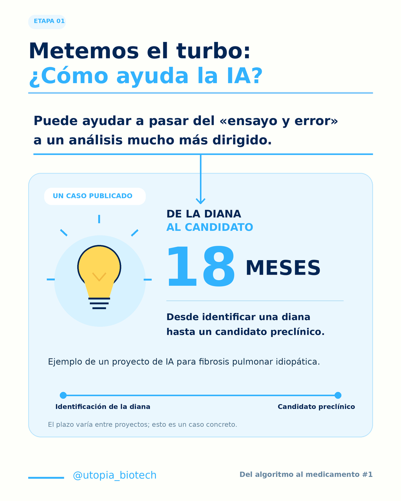
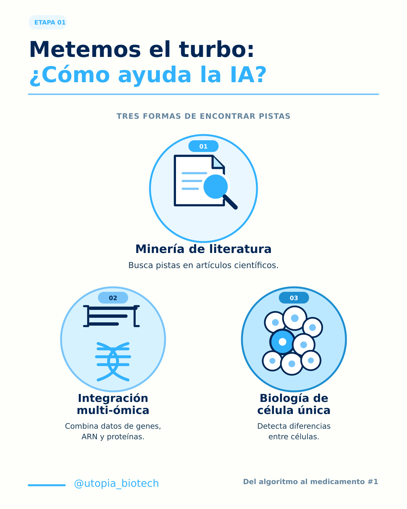
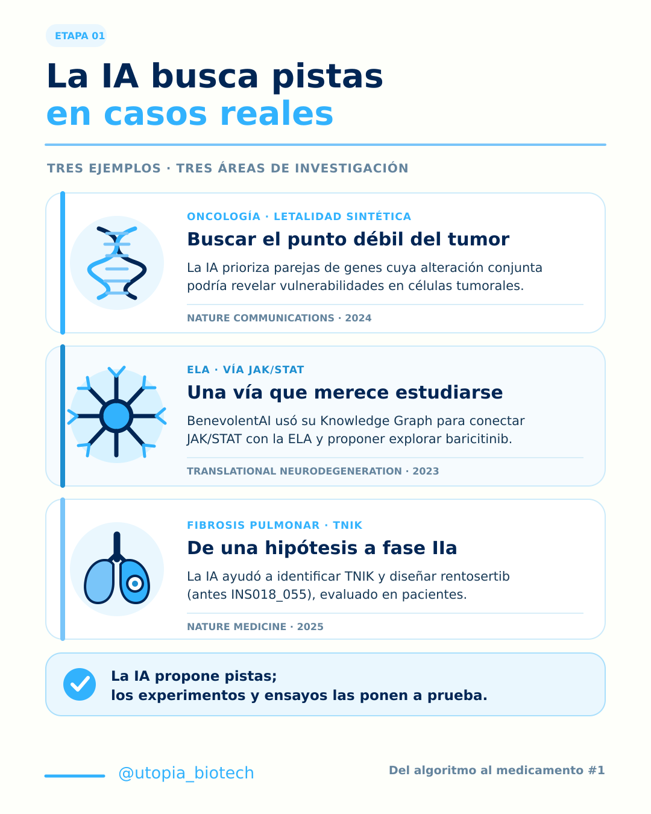
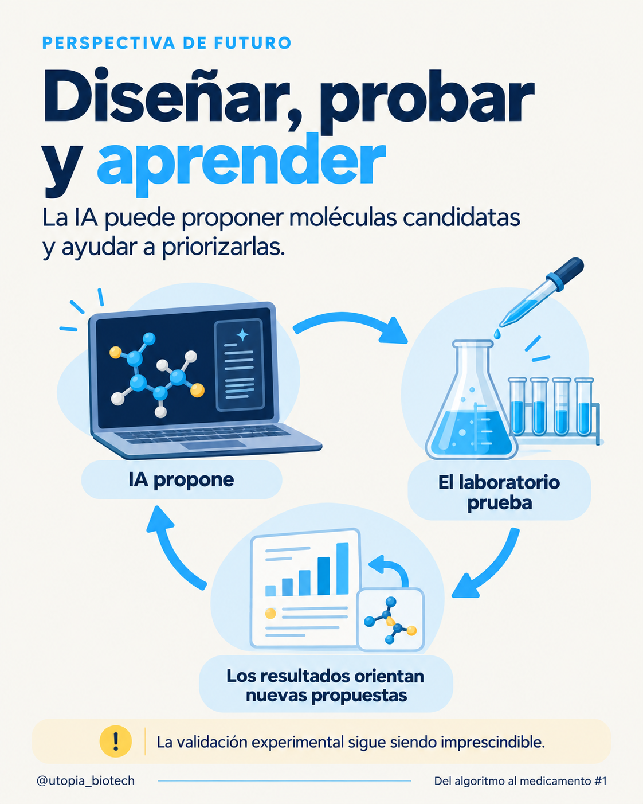

Publicación del algoritmo al medicamento #01
¿Cómo ayuda la IA a encontrar las dianas terapéuticas?
Dentro de este ámbito, la inteligencia artificial actúa como una herramienta que acelera en gran medida la identificación de estas dianas, ya que permite pasar del ensayo y error al análisis predictivo.
La IA no realiza "descubrimientos" en solitario, sino que procesa volúmenes masivos de datos biológicos para priorizar qué candidatos tienen mayor probabilidad de éxito biológico y relevancia clínica. Esto supone una solución muy necesaria al problema existente por la llegada de las llamadas “ómicas”.
ENFOQUES COMPUTACIONALES
- 1. Minería de Literatura Algoritmos analizan millones de artículos científicos, patentes y bases de datos asociando genes, proteínas, síntomas y compuestos químicos, llegando a conclusiones como: "El Gen X, estudiado en la enfermedad A, podría ser la diana clave de la enfermedad B".
- 2. Integración multi-ómica Analiza simultáneamente datos de genómica (ADN), transcriptómica (ARN), proteómica (proteínas) y metabolómica de miles de pacientes, con el objetivo de comparar estos datos con los de pacientes sanos y aislar "nodos maestros" de los cuales depende la patología.
- 3. Biología de célula única Permite desglosar la expresión génica célula a célula, identificando dianas que solo se expresan en subpoblaciones celulares patológicas específicas (ej: células madre tumorales).
¿DÓNDE Y CÓMO SE ESTÁ APLICANDO?
- · ONCOLOGÍA: Algoritmos de IA analizan perfiles genómicos tumorales para predecir pares de genes en los que la pérdida de ambos causa la muerte celular, pero la pérdida de uno solo no. Esto permite identificar dianas que destruyen el tumor sin dañar las células sanas.
- · ENFERMEDADES NEURODEGENERATIVAS: BenevolentAI utilizó su plataforma de IA para identificar la quinasa AAK1 como diana terapéutica en la Esclerosis Lateral Amiotrófica (ELA).
- · FIBROSIS: En 2023, la molécula INS018_055 (de Insilico Medicine) entró en fases clínicas avanzadas para la Fibrosis Pulmonar Idiopática. La IA identificó la diana biológica (una vía biológica novedosa) y diseñó la molécula pequeña para bloquearla de forma completamente automatizada.